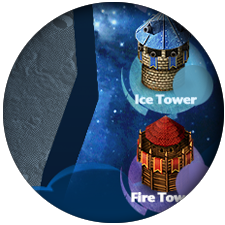
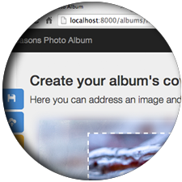
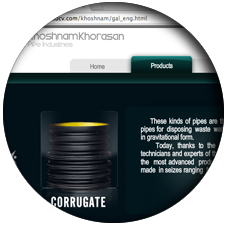
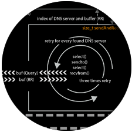

First, I thank you in advance for reviewing my application materials and I am so grateful for your time and consideration.
This page and this little game have been prepared for my application for Roivio company.
Kindly consider that the game has been implemented from scratch in less than one week, and has been developed using pure Javascript and HTML5 without using any other library or framework except jQuery. Besides, its spreadsheets and illustrations which are inspired by Angry Birds game are designed from scratch. Alghouth it is not a perfect game, I hope that it would display my great motivation and skills for this position.
In addition to my programming skills, I have more than 10 years of experience in graphic design and I am an expert in working with designing software such as Adobe Photoshop, Illustrator, Corel Draw and Freehand. Also, I am familiar with 3D Studio max and Vray as well. As a master student in Networking technology, my study is in the field of IT; besides programming courses that I have passed, I have lots of programming experience in C, C++, HTML, CSS, Javascript and Python. Therefore, I believe that the combination of these skills make me able to combine design and coding to create fancy games or applications.
Last, I hope my category expertise combined with my enthusiasm and diligence will make me well qualified for this position.
You can find the complete list of my programming skills in my resume file.
Related Experiences
In this section, you will see a summary of my related experiences and projects.

Galaxy Tower Defence game - C++/SFML
For implementing this game, we worked in a pair group; and I was responsible for coding and designing the UI part of the game and implementing main loop, menus, towers and map. This project has been developed by C++ and SFML library in less than two months.

Seasons Photo Album - Django, Javascript, HTML5, CSS3, Ajax
This project is not deployed on a public server yet, but the main part including creating and modifying photo albums are finished at the moment. The key point which makes this project distinctive compared to other works is that the creating and modifying album processes are implemented using jQuery and Javascript. So, every element is generated on the fly and this approach enables end user to see the final result during creating and modifying albums. Moreover, I have used Ajax and JSON for sending requests to the server which helps end user to have a better experience while using this web application.

A static webpage - Adobe Flash, HTML, CSS, ActionScript
This web page has been designed and implemented for one of my customers; every asset in this web page including photos and 3d simulations are prepared by me.
A short Intro Animation - Adobe Illustrator, Adobe Flash, ActionScript
I designed this short intro in order to introduce my advertising idea to customers during the presentation, many years ago. Every frame has been illustrated and animated by me, though the idea of this animation was not mine.

Network Programming -Socket Programming, Unix Programming, C
The purpose of this project was implementing an HTTP/DNS proxy that can response to GET, PUT and POST requests. The server can be run as a daemon process and also it is possible to be executed in the debug mode, which runs in foreground and prints some messages during its operation to the standard output. Establishing TCP and UDP connections, generating IPv6 and IPv4 DNS queries, responding and sending HTTP requests, and transferring files are some featuers that are implemented in this project.
UI developer at Luisto Lab oy. -MVC4 C#, Javascript, Jqury, HTML5, CSS3
As a member of Luisto Lab developers team, I have been responsible for the UI part of the project. Everything has been implemented from scratch and finally we could develop a clean and stylish theme. Because this project is not deployed yet, I am not alowed to share it.
Thank you very much for visiting this page. I would also invite you to visit my portfolio website. www.behzadcv.comContact me
Behzad Savabi